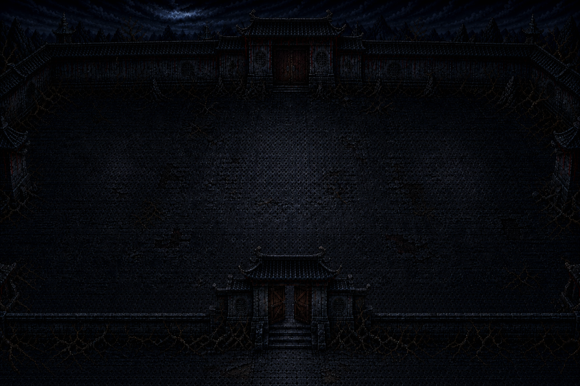
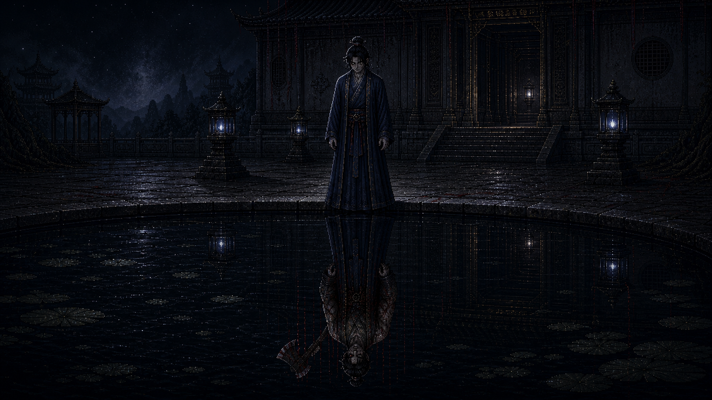
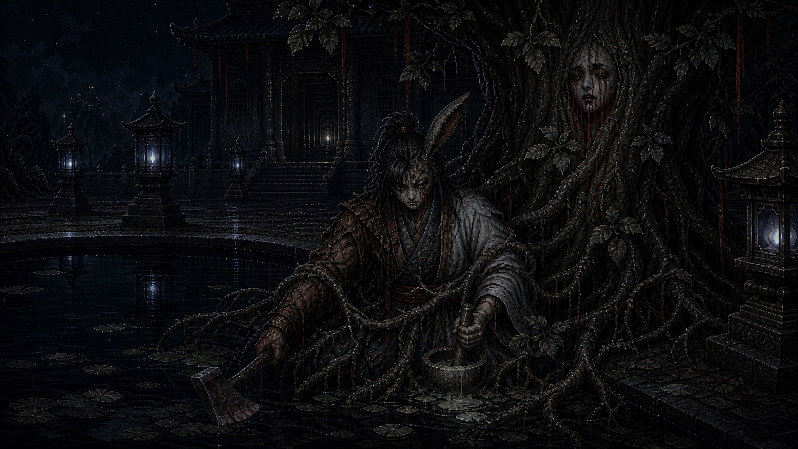
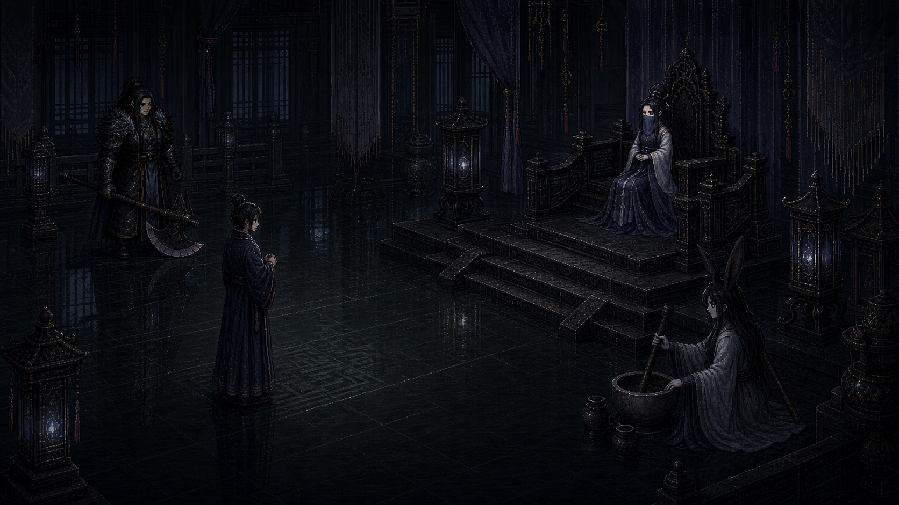
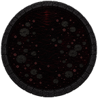
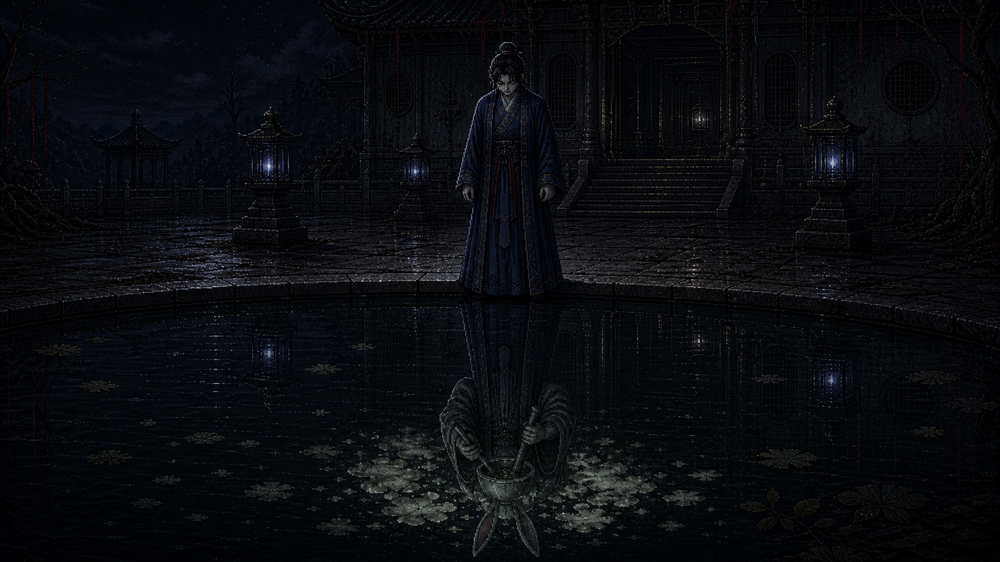

对比 Ending CG 与实际前院场景中的宫殿大门和月池区域

当前前院入口使用 expanded closed/open 两态的中央宫门轮廓。旧 v9 Gate 候选只作为 STALE 问题证据，不再作为正式画面依据。



CG 中的宫门是 AI 生成的宽大宫殿门面，与游戏前院的临时标记完全不同。
宫门差异
CG 中出现了完整的宫殿建筑结构（高大门面、飞檐、纵深走廊），而游戏实际前院只有代码绘制的低干扰临时标记。玩家在游戏中看到的入口和 CG 结局中看到的宫殿门面是两套完全不同的视觉语言。

当前运行时月池为 144×144 圆形资源，实际场景中心是 MoonPool(480,300)。旧 moon_pool.png 与 v9 Pool 候选均标记为 STALE，不能作共同造型依据。

CG 中的月池是大面积暗色水面/地面倒影区域，有根系蔓延和污染扩散效果。
月池差异
CG 中的月池是大块暗水地面，玩家倒影中会出现斧/杵等污染标记，水面有根系污染扩散。游戏中的月池仍是原始的小型像素图案，缺少大面积暗水和污染倒影的视觉语言。
冷月白 + 青灰色调的精细像素俯视角 2D 场景，当前正式底图为 960×640；逻辑视口按 480×270 再以 2×整数显示。
电影感 CG 保留宫门、月池、根系等构图锚点；其空间和角色层仍需按 Batch A 批准后的基准重做/分层，不能把旧候选直接升格为正式资产。
整体差异
游戏前院是冷月白+青灰的像素俯视角 2D 场景，BE CG 是 AI 生成的写实风格半俯视/正面视角场景。两者在视角、美术风格、场景复杂度上存在根本性差异。CG 的视觉质量远高于游戏实际画面，宫门和月池的细节在 CG 中存在但在游戏中缺失。